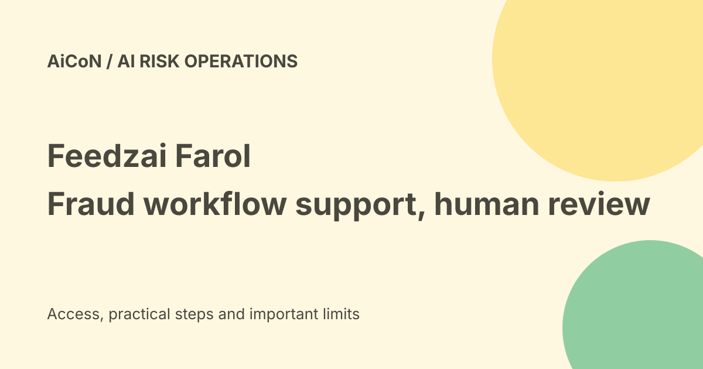

Feedzai Farol: fraud-analysis skills, report review and access limits
Feedzai launched Farol on 24 September 2026 as an AI agent embedded in its RiskOps workflows. It helps financial institutions inspect rules, investigate alerts and draft reports. It is not a consumer fraud-checking app or an authority to file regulatory reports without review.

Who is it for?
Farol is intended for banking and financial-institution risk teams. Feedzai describes it as part of RiskOps Studio, within software analysts already use.
Risk operations include finding suspicious activity and investigating alerts. A person receiving a scam message should use their bank's official reporting process, not expect access to this enterprise platform.
Risk Strategy skill
The vendor describes analysing rule performance, coverage gaps and thresholds. A threshold is a setting that determines when a rule triggers an alert.
A recommendation to reduce noisy alerts needs careful validation. Fewer alerts can be useful, but reducing them without checking missed fraud can weaken detection.
Investigations
Farol retrieves and summarizes alert data so analysts can understand a case faster. The launch release claims a twenty-percent reduction in alert-handling time.
The current product page uses up-to language. Keep the claim attributed to Feedzai rather than promising a fixed saving for every bank, dataset or investigation.
SAR drafts
SAR means Suspicious Activity Report. Farol's SAR skill compiles case information into a draft narrative for investigator review.
Feedzai claims up to twelve-times-faster drafting or filing workflows. That is a vendor performance claim, not proof that a generated report meets every jurisdiction's requirements.
Human judgment remains necessary
Check the facts, evidence, dates, parties and local reporting rules before a report is approved. An AI-generated explanation can be incomplete or wrong.
A draft is not a filed report. Do not assume the system is authorized to submit it, change a rule or close a case merely because it can propose the next step.
Knowledge skill
The vendor describes conversational answers based on product documentation. Source references can help an analyst verify how a feature works.
Check the documentation version and whether the answer applies to your institution's actual configuration. A general platform answer may not match a customized workflow.
Bring Your Own Agent is upcoming
The product page's FAQ says connecting an institution's own agents is an upcoming capability in active development. It invites customers to help test it.
That qualification is more precise than a headline saying the product already connects your agents. Do not plan a production integration as though general access is confirmed.
Data and audit claims
The launch release says Farol operates within each institution's environment and information and insights stay inside the customer's estate. It also describes transparent audit trails.
These are vendor architecture claims. A bank still needs to inspect its contract, deployment, provider access, data retention, logs and permissions before using customer records.
Price and India verdict
No public consumer free plan, exact enterprise price or institution-specific Indian deployment terms were established in the checked material.
This is an enterprise product, not a free download for individual customers. An Indian institution should confirm licensing, procurement, security and applicable reporting requirements before adopting it.
A careful trial
- Define one low-risk workflow and success measure.
- Use approved test data and limited access.
- Compare summaries against source records.
- Review false positives and missed cases separately.
- Keep rule changes and regulatory reports behind approval.
- Check audit logs, deletion and access revocation.
- Measure review time and errors, not only generation speed.
No bank data, account, agent integration or report was operated for this guide.
What changed since the original post?
We distinguish report drafts from authorized filing and call out that bring-your-own-agent connectivity is upcoming. The speed and adoption figures remain Feedzai claims, not independent results.
Frequently asked questions
Can an ordinary bank customer download it?
No consumer download was verified.
Does a draft guarantee compliance?
No. A qualified reviewer must check the applicable rules.
Is own-agent connectivity generally available?
The checked FAQ calls it upcoming.
Sources: Current Farol product and FAQ · Official launch and data claims. Checked 7 October 2026.